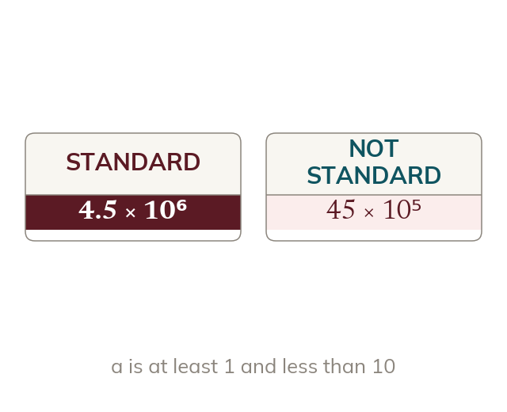

One digit before the point
Standard form is a × 10ⁿ, with a at least 1 and less than 10. So 4.5 × 10⁶ is in standard form. 45 × 10⁵ is not.
A number in standard form is a × 10ⁿ, where a is at least 1 and less than 10. So 4.5 × 10⁶ is in standard form, but 45 × 10⁵ is not.